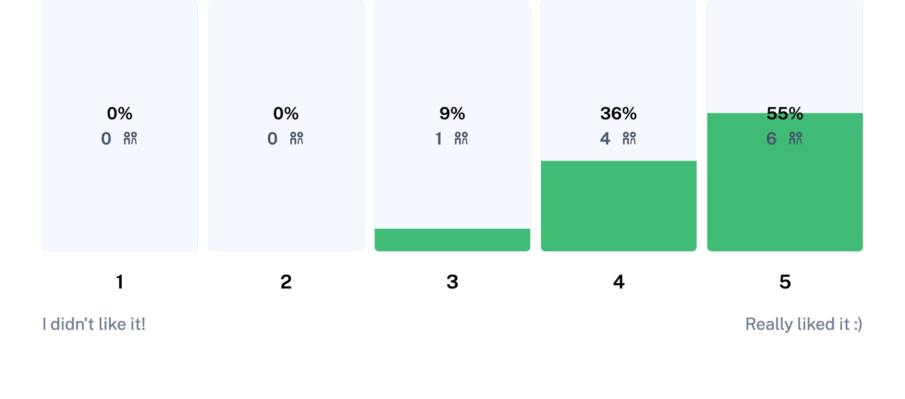

Process
Research and discovery
During a 3 week Double Diamond design process I employed a variety of research methods to design the information
architecture and influence the branding guidelines of the Sync App.
Literature Review
The core idea for Sync was based on the assumption that music and emotion are inextricably linked, and that music is
more than just beautiful sounds, but a tool and even a coping mechanism. I wanted to see what the world of Psychology
had to say about the ties between music and emotion.
Key Discoveries:
-
People use music as a tool for emotional regulation
"People use music in their everyday lives to regulate, enhance, and diminish undesirable emotional states" - Shahram
Heshmat Ph.D.
-
Listening to “sad” music can help people cope with sadness in their own lives
“People use music to achieve various goals.. for instance, sad music enables the listener to disengage from the
distressing situations.. and focus instead on the the beauty of the music"- Shahram Heshmat Ph.D.
-
Heightened emotions can impair the ability to effectively choose the right music
“Other studies confirm the fact that people with depression are not always able to effectively select music that helps
them to feel better” -Music Use for Mood Regulation
Surveys
I wanted to understand how the experiences of real users measured up against my initial research. Did sad music help
them cope? Did they ever find themselves at a loss of what to listen to? I wanted to hear it in their own words.
Conducting user surveys allowed me to define a target audience, validate assumptions, and create a network of potential
participants with whom to conduct further research.

Target Audience Profile
Age: 18-45
Key Psychographics:
-
Values: Emotional stability, community, creativity
-
Habits: Listens to music on a regular basis, engages with their mental health
-
Wants to: Listen to highly personalized and curated playlists that actively encourage connecting music and their moods
Challenges
-
Mood playlists on the market don’t always provide mood related content curated to specific musical preferences
-
Finding the right music for the right moment can be daunting and overwhelming
Preferred Channels
-
iOS device and Android
-
Spotify, Apple Music, Youtube
Competitive Analysis - Spotify and Apple Music
Honestly these apps are top of the line. Spotify dominates the market, retaining 36% of music streaming app subscribers
compared to Apple Music's 19% and Amazon Music's 12%. I conducted a market analysis and SWOT analysis of Apple Music and
Spotify to gather inspiration and insights, and to pick up on common UI Patterns used in popular music apps, to ensure a
design of the Sync App that stays true to the users mental model of a mobile streaming service.

Key Discoveries:
-
These apps are popular and solid, with a devastatingly loyal customer base. How could I make my product marketable with
such well established giants on the market? I knew I had to find a way to differentiate Sync on the market to even stand
a chance in a competition with a giant like Spotify.
-
Although Spotify and Apple music both offer mood based playlists, these are pre-built playlists to match preset
emotions. This presented me with an opportunity to identify the Sync Apps main differentiator, combining the common idea
of mood based playlists with personalized content and marketing the Apps main function as an intentional and mindful
listening experience.
“However, the mood playlists do not always deliver the desired effect for participants, as the music contained within
the mood playlists does not necessarily deliver on participant’s own taste, or their expectation around the music’s
appropriateness for the desired mood." - Medium
Proto Persona
While I was coordinating with participants for more in depth, qualitative interviews, I went through a basic journey
mapping exercise with a proto-persona developed based on survey data.

Based on assumptions, surveys, and initial research I tried to imagine what pain points might present themselves in this
use case, like unsatisfactory content curation and emotional overwhelm that affects the users personal life and
engagement with music.

User Interviews
I aimed to interview participants in the 18-45 age range that found a high level of connection between mood and emotion
and used Spotify or other streaming services.
To facilitate these interviews I set up an account with Calendly and sent an outreach email to identified survey
participants allowing them to self schedule on my calendar. In the end I had the privilege of conducting six remote user
interviews over Zoom. Through this process I was able to get a wholistic and in depth picture of the musical landscape
that our users navigate, and how emotion serves to influence that landscape.

Janelle Jones
30 • Designer

Jordan Parker
47 • Scientist

Henry Rocha
26 • Math Teacher
Peter Kim
28 • Real Estate

Alenn Rjinders
24 • Security Consultant
Rei Landeau
22 • Graphic Designer
In short, I found that users in our target audience faced the same experiences and challenges that I had identified in
my initial review of psychology journals
Mood affects peoples musical choices
“I’m pretty conscious, if I'm going to play a certain artist I'll even change my mind on which album to play depending
on my mood. I would honestly say that influencing my own mood can sometimes be a motivator for the music I pick” - Henry
Choosing music can be daunting at times:
“If I'm feeling kind of weird I might not listen to music because it’s too much work… the idea of going in and deciding
what to pick is kind of like I don’t want to think about it” - Rei
Listening to sad music can be beneficial during a difficult time:
"It doesn’t align with how I'm seeing the world in that moment I guess, and it does make me feel more like alienated in
that feeling or like it makes me feel guilty for lack of a better word. It’s invalidating to listen to something
cheerful when I’m sad or upset” - Janelle
Personas and Journey Mapping
I used the qualitative insights gathered during user interviews in combination with survey data and proto-persona
generation to develop out a few more fully formed personas to embody the target audience of the Sync App and guide me
through journey mapping

Claren Jacobs
18, single, they/them
Occupation: Gym Attendant
Location: Tampa, Florida
Archetype: The artist
Quiet • Introspective • Creative • Semi-technical
Goal | Interests
-
Finish school and get their own place
-
Develop a consistent meditation practice
-
Develop more tools to deal with grief
-
Discovering new and modern artists
Behaviors
-
Works out at the gym after their shift
-
Listens to music in the car and while studying
-
Journals nightly
-
Listens to Spotify's "Discover Weekly"
Pain Points | Frustrations
-
Endures the stress of working and going to school
-
Sick and tired of living with their parents
-
Often struggles to find the right music for the moment
-
Inconsistent algorithms on Spotify
Motivations
-
Discovering new artists in their preferred genres
-
Listening to music that will enhance emotional wellbeing
-
Save music to a customizable library
-
Better curation of content to match their moods
Shayla Patterson
34, single, she/her
Occupation: Data Analyst
Location: Columbus, Ohio
Archetype: The Civilian
Joyful • Bookworm • Efficient • Technical
Goal | Interests
-
Regulate her mood to improve her life
-
Use music to help stay centered
-
Work hard while still finding time to unwind
-
Discovering new music that fits her interests
Behaviors
-
Works a 9-5 job
-
Listens to music in almost any situation
-
Lives alone in a large apartment
-
Spends a lot of quiet time by herself
Pain Points | Frustrations
-
Loves being alone but often gets lonely
-
Suffers from mood swings and depression
-
Forgets to check in with her mental health
-
Spotifys ‘mood playlists’ lack personalization
Motivations
-
Mood regulation through music
-
Discovery of new content
-
Saving and sharing playlists
-
An easily accessible playlist history
Experience Mapping
During journey mapping I identified opportunities for potential user delights within the app like allowing the user to
update their preferences from many different channels within the app. I used the sequencing of steps on journey mapping
to start thinking about content strategy and information architecture. When would the users add their interests? When
would I present the Sync Apps value proposition within the design?

Information Architecture
User Stories and User Flows

Site Map
Once I had iterated on user flows I started to think more about which screens I would need to design for the users to
achieve their goals (complete their tasks) and how these screens might need to interact. I used a card sort conducted
through Optimal Workshop to drive the organization of content across the screens of the app.

Ideas and Solutions
Once I had a grasp of how I wanted to organize the content of our app I took pencil to paper and starting working out
some different ideas for how the concept could come to life through design.
Sketching
Wireframes and Prototyping
After sketching out a few different versions of my screens I took some selected sketches into Figma to see how they
compared as digital iterations. The process of pushing pixels during wireframe creation allowed me to spot flaws in my
design early on. To be frank, it was ugly. My first vision of how my main user flow might look was clunky and
cartoonish, wasn’t intuitive and required far too much work for the user, I could already see choke points in the flow
where users may up and leave the app, frustrated with the steps they needed to take to achieve their goals.
With some further sketching, iterative digital versions, and guidance from my mentor on the Thinkful team I was able to
refine my wireframes and build out versions that I felt ready to take into the branding portion of the design process.
So, what changed?

Improvements Made
-
More prominent and well placed CTA on homepage
-
More convenient channel to set current mood
-
Simpler flow eliminates unnecessary steps
-
Better consistency across screens
-
Less playlist options presented to users accomodate limits of MVP
Branding
I started my branding process with some Design Inspiration and a mood board. One thing that stood out to me in current
music app designs is the use of deep colors and gradients that give the UI an almost futuristic look. I decided to
pursue dark gradients with a color palette I built out using Synth Wave Art style and color psychology as my guide.
Mood Board

Color Palette
-
I chose two analogous colors (a bright blue and purple) for the basis of the color scheme
-
I used a shade generator on both of the colors to build out a series of monochromatic accent colors to use in my design
-
Color Psychology: Blue shows faith, stability, and wisdom. Purple emits royalty, creativity, and mystery
-
What mood are we trying to evoke with Sync? The core of the Sync Brand Identity/Personality is faithful, trusted, evokes
inner wisdom, and creatively helps people to find stability. I want Sync to be mysterious and creative, unique and
innovative while also being stable and soothing to users.

Typography
Because I chose such a color heavy UI and employed the use of gradients, I knew I had to strike balance by incorporating
a simple typeface for both headings and body copy. I wanted to use typography to keep the design sleek and achieve
continuity with the emotions the Sync brand seeks to evoke, like trust and stability. I started by revisiting typography
best practices:
Accessbility
This is a project where I know I could have put more of a focus on accessibility.
I identified issues in my usability testing that I saw could have been avoided with a stronger incorporation of
accessibility guidelines.
I spent some time looking over the WCAG 2.0 guidelines and seeing how I could ensure the use accessibility in the design
and development phases of the project.
Mockups
I used the branding guidelines that I had established to begin designing components and screens
Usability Testing
"Awesome! I would use it in real life" - Peter Kim
After spending time refining the color scheme and designing micro-interactions, I built my high fidelity screens into a
clickable prototype to simulate the interactions of Sync’s main user flows. Using feedback from peers I was able to
iterate and refine the design until it was ready to take into a round of user testing.
Preference Testing (Usability Hub)
I wanted to employ a variety of usability testing methods to paint a comprehensive and thorough picture of users'
response to the design and test the apps functionality. One method I chose to use was a remote preference test through
Usability Hub to see how different versions of key screens compared in the eyes of the user.

First Click Test - Optimal Workshop
The results of my first click test showed a 60% success rate for the two tasks that I tested. The success rate wasn’t
ideal for usability, but I wanted to test my ideas with more context before making any changes.
Maze User Test
The Maze user testing provided me with mixed results. The overall reaction to the app was positive
"Close to perfect" -User

However, not everyone had such a positive experience.
I made note that at least two users struggled to make it through the sign-up process, I wasn’t
going to discount these results:
The main flow that I had the most concerns about performed at an 83% success rate with a 6% misclick rate. I
was trying a creative approach to move through the main flows of the app. I wanted to observe users performing this task in action.

Moderated Usability Tests Round One
To supplement these remote user testing results and add more context to the data, I performed two rounds of moderated
usability testing
Ella Klein
31 • Tech Support
Henry Rocha
26 • Math Teacher
Jordan Parker
47 • Scientist
Peter Kim
28 • Real Estate

I captured feedback by timing and calculating error rates for high priority tasks along with short recall tests after
allowing participants to study various screens for 5 seconds at a time. I also asked qualitative questions about how
users felt about the app and how they would describe it.
Here’s what I discovered:
"Having something that's like more mood set is actually pretty awesome, and it's like a different way to approach going
through trying to pick what you want to listen to" - Ella Klein
"I think this is such a cool feature, to tap and then change the mood and it'll just go to what you want" - Henry Rocha
"I like how quickly and easily you were able to see a list of different feelings and different moods" - Ella Klein
Users enjoyed the visuals, loved the concept, and found the main flows to be intuitive and user friendly
Moderated Usabilty Tests Round Two
As I moved through my design process and continued to design screens for more flows, I conducted a second round of
testing these processes with real potential users.
Gabrielle Lan
22 • Student
Henry Rocha
26 • Math Teacher
Simone Davis
28 • English Teacher
Louise Mercer
76 • Retiree
During testing of these new flows I identified that multiple CTA’s lacked prominence in the design and were easily
missed by users. It also seemed that the placement of “favorites” broke the users mental model, an issue that could
potentially be addressed by establishing stronger hierarchy in the library.
"I didn't even see the undo button. I heard I want to add the strokes back in and my first thing is to look at the plus
button." - Greta Erikson
“The trash can though, I did have to hit it twice and that was a little confusing to me because usually that doesn't
happen” - Gabrielle Lan
Maze Testing Round two
I conducted another Maze test to test this second round of flows in a remote, task based environment. Since I had
identified some usability issues in my moderated tests of these flows I wanted to work to identify patterns.
Looking at the heat maps on Maze I was able to gauge that the widget based UI pattern for deleting artists generally
made sense to users, but getting there was an issue. The CTA to edit interests was unclear to users.
Changes made
So how did these rsults affect my design decisions?
After compiling all of my test data, identifying patterns, trends, and usability issues, I took some time to brainstorm
various solutions to my design. Some were simple fixes, like raising the contrast value or adding a background to a CTA.

I also refined the process of editing interests based on feedback from users. I made the “edit” and “save” features more
prominent, wrote more thorough and explanatory content to guide the user through the process, and eliminated the need to
press the trash can icon twice to achieve the user goal.
I also included an overlay to notify the user of the undo feature since 75% of users during testing were unable to
locate the undo button.

I styled the arrow keys on the Playlist Preview to make the CTA more prominent and visible and adjusted the content of
the page to improve the details of the visual design.